Diffusion Model
Difussion模型是当今生成领域火热的模型，过往的GAN和VAE已然退出前排。
本文主要围绕《Denoising Diffusion Probabilistic Models》 (DDPM) 展开。
简要介绍
Diffusion模型本质上是加噪和去噪的过程，通过加噪将一张图片转为纯噪声，通过去噪将一张噪声转为有价值的图片。
这种原理其实很显然，比如像GAN和VAE，从特定分布中抽取并生成，image = f(noise)。Diffusion也是这样，只要我们能通过一个g(image)=noise，那么我们就能从g(image)=noise中得到image = f(noise)。但由于神经网络的复杂性（一个黑盒子很难找到它的反函数），所以Diffusion做的处理是，加噪使用简单的操作，去噪再使用神经网络，而不是两者都用神经网络。（这样做也更简单。）
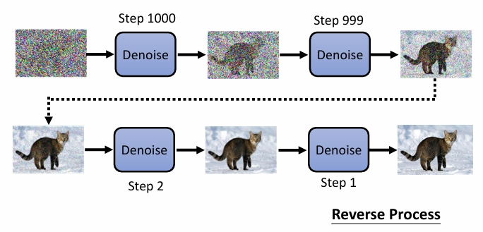
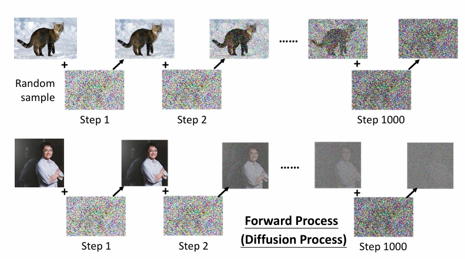
另一方面，由于直接预测会很难，所以内部实际上是预测残差。
这有点类似GBDT，不断地去拟合残差，且不是一次拟合完。多次逐一地去拟合。
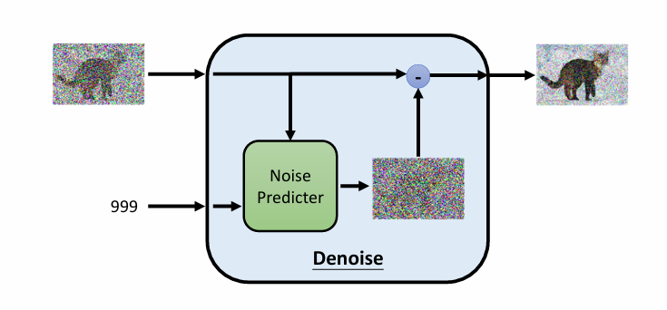
算法
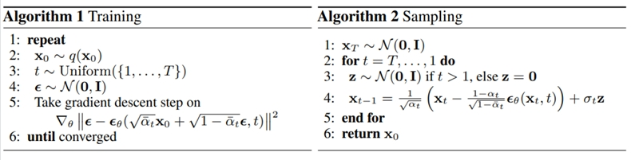
对于训练的第五行：
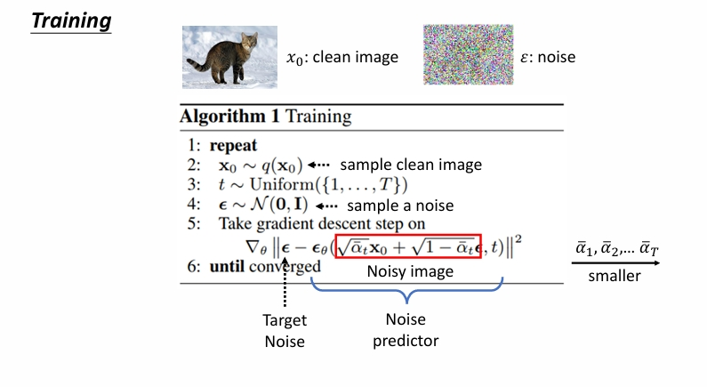
画红框的地方是这样来的：
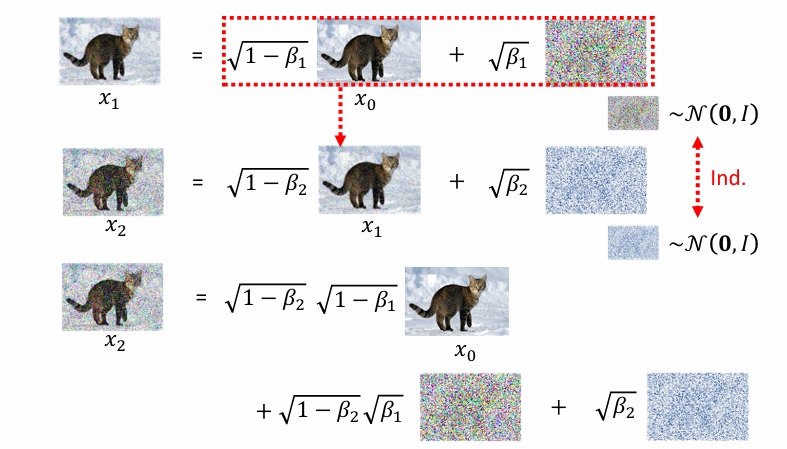
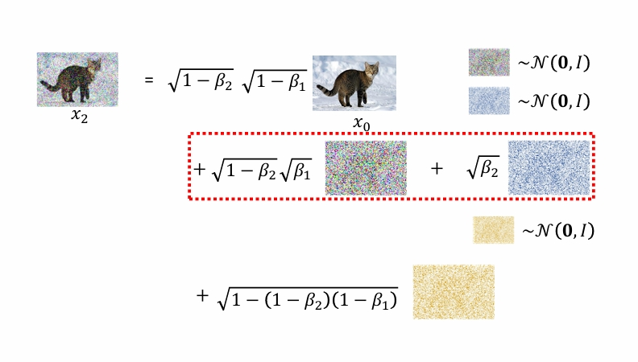
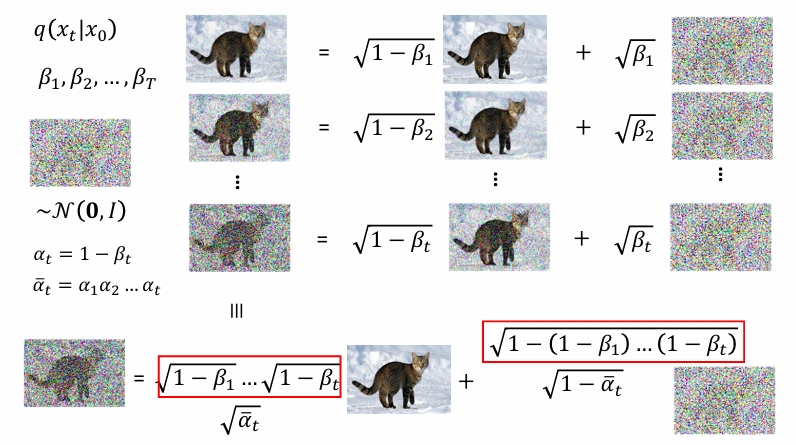
对于sampling的第四行：
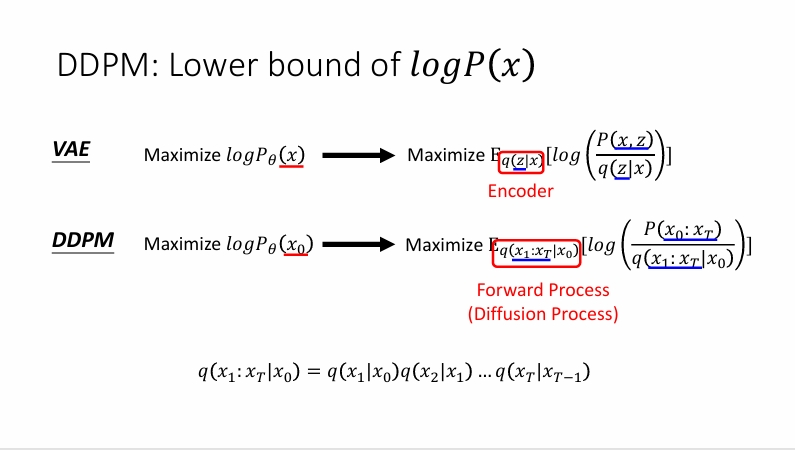
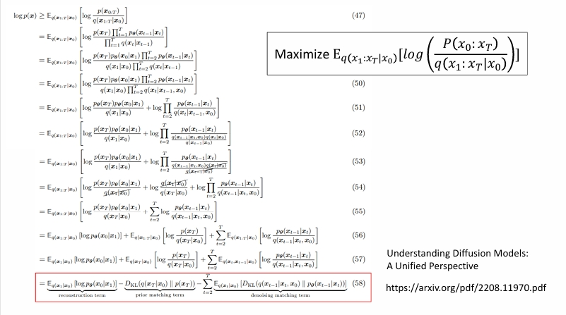
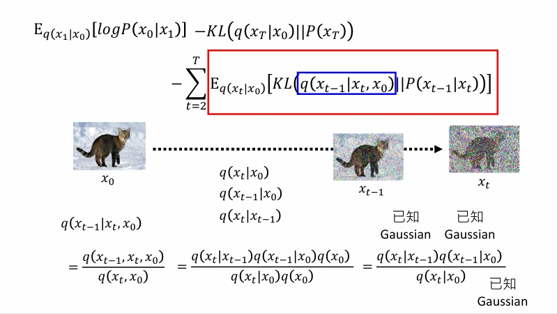
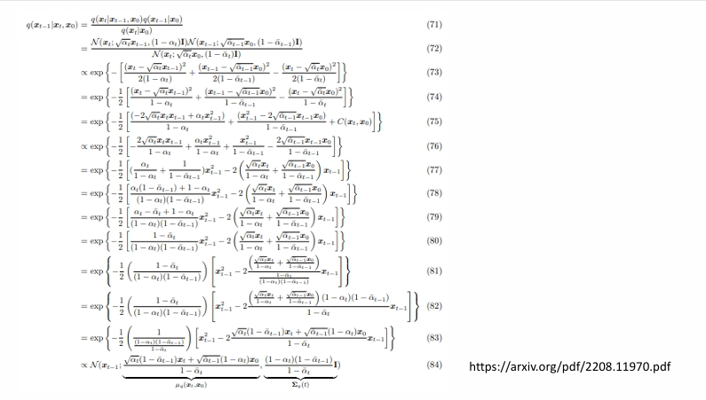
即
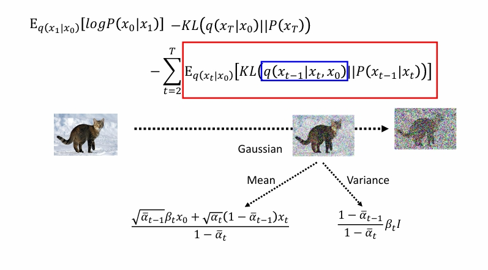
对于KL散度，有以下公式。
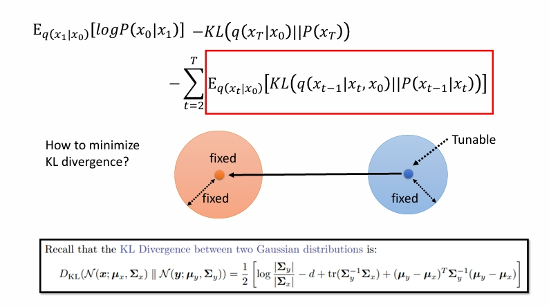
但是实际上方差我们假定是固定的，所以只需要均值越靠近越好。也就是相当于使用去噪神经网络直接预测左下角那一坨。
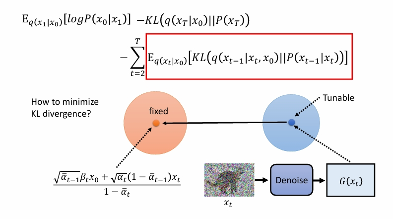
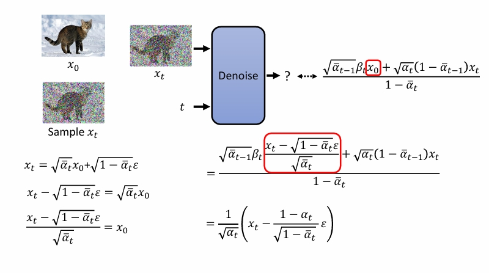
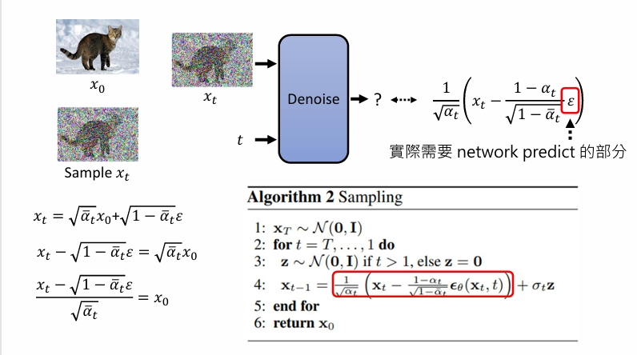
另外，注意到第四行最右边还有一项加噪声，这是为了多样性。正如李宏毅课上所说的，实际上的模型也并不是每次取最优解。
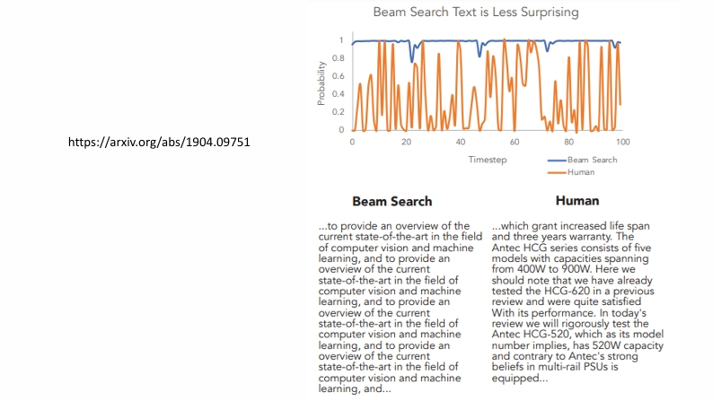
参考资料
Diffusion Model
https://lijianxiong.work/2025/20250427/